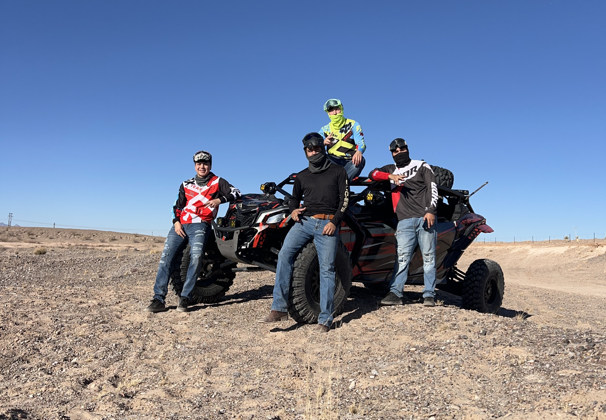
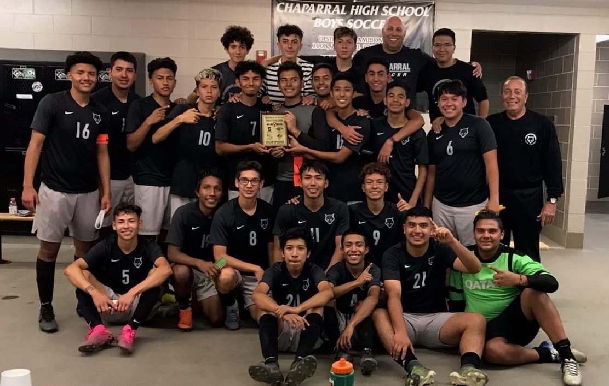

My Hobbies
I enjoy a variety of activities outside of my studies and work:
Offroading
One of my most recent and exciting hobbies is off-roading with friends. I own a Can-Am Maverick, which offers an adrenaline-pumping experience on rough terrains. Every couple of weeks, I head out on new off-road routes around my hometown or venture out to the Red Sands. While off-roading can be risky—given the accidents that sometimes occur—safety is always my priority. I make sure to wear my seatbelt and take precautions to minimize any risks involved.
Soccer
Soccer has always been my favorite sport. I was introduced to it at a young age and have been a passionate player ever since. Throughout my school years, I was part of various teams and clubs in El Paso, competing in numerous tournaments and even winning a few. Though I don't play as seriously now, I still love getting together with friends for some indoor games or kicking the ball around just for fun. Soccer will always be a hobby that brings me joy and keeps me active.
Video Games
Another hobby I enjoy is playing video games. I own two consoles: a PS5 and a Nintendo Switch. Recently, I've been spending more time on the PS5, particularly playing FC 25—a soccer video game that keeps me connected to my favorite sport. I also enjoy intense battle royale games like Fortnite and Call of Duty Warzone. As for the Nintendo Switch, it's my go-to for family-friendly games, providing a fun way to interact and compete with my loved ones.